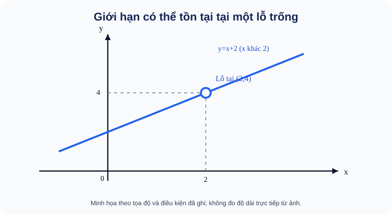
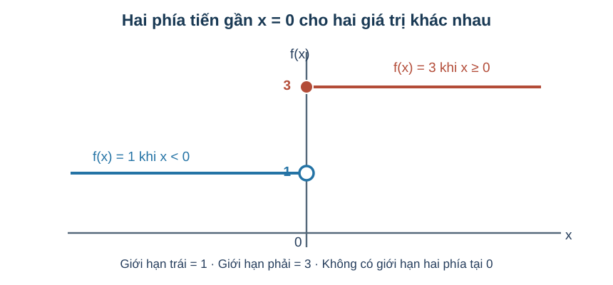

Bài 16. Giới hạn của hàm số
TOÁN 11 · CHƯƠNG V · SGK KẾT NỐI TRI THỨC
Không cần biết giá trị ngay tại điểm vẫn có thể xét giới hạn; phải phân biệt tiến từ trái/phải, tiến tới vô cực và tiến đến giá trị vô cực.
1. Khám phá kiến thức
Ở Bài 15, ta đã học một dãy số \(u_n\) tiến gần một số khi chỉ số \(n\) tăng mãi. Bây giờ em sẽ cho biến thực \(x\) tiến gần một vị trí hoặc tiến mãi về hai phía trục số, rồi quan sát giá trị hàm \(f(x)\). Có ba câu hỏi khác nhau theo SGK: khi \(x\) gần một điểm thì \(f(x)\) có thể gần một số hữu hạn không; khi \(x\) rất lớn hoặc rất âm thì sao; và khi \(x\) gần một điểm mà \(f(x)\) lớn không bị chặn thì phải phát biểu thế nào?
1.1. Giới hạn hữu hạn của hàm số tại một điểm
Thử tính \(f(x)=\frac{x^2-4}{x-2}\) tại \(x=2\): phép chia không xác định. Nhưng với \(x\ne2\), ta phân tích tử và rút gọn \(f(x)=x+2\). Lấy các giá trị gần 2, chẳng hạn \(x=1{,}9;1{,}99;2{,}01;2{,}1\), giá trị tương ứng là \(3{,}9;3{,}99;4{,}01;4{,}1\), tiến gần 4 từ cả hai phía.

Đây là điểm cốt lõi: giới hạn xét ở gần \(x_0\) chứ không bắt buộc biết hàm số ngay tại \(x_0\). SGK định nghĩa qua dãy: nếu mọi dãy \((x_n)\) trong miền xác định, \(x_n\ne x_0\), \(x_n\to x_0\) đều cho \(f(x_n)\to L\) thì \(f(x)\to L\) khi \(x\to x_0\). Không thể chỉ thử một dãy rồi coi đã chứng minh toàn bộ, vì dãy khác có thể cho kết quả khác.
Khi biết các giới hạn hữu hạn của hai biểu thức, ta có thể cộng, trừ, nhân chúng; phép chia chỉ áp dụng khi giới hạn mẫu khác 0. Chẳng hạn, với phân thức trên, ta phải khử nhân tử chung \(x-2\) khi \(x\ne2\) rồi mới thay \(x=2\), vì mẫu ban đầu tiến về 0.
Hai phía có thể không giống nhau. Hãy xét một quy tắc tính phí: \(g(x)=1\) khi \(x<0\), \(g(x)=3\) khi \(x\ge0\). Khi tiến về 0 từ bên trái, mọi giá trị hàm bằng 1; từ bên phải bằng 3. Vậy giới hạn trái là 1, giới hạn phải là 3; không có giới hạn hai phía ở 0, dù \(g(0)=3\) hoàn toàn được định nghĩa.

Khi miền xác định cho phép tiến lại gần từ cả hai phía, điều kiện \(\lim_{x\to x_0^-}f(x)=\lim_{x\to x_0^+}f(x)=L\) là cần và đủ để giới hạn hai phía bằng \(L\). Nếu hàm chỉ xác định về một phía gần đầu mút, ta dùng khái niệm giới hạn một phía, không tự phát biểu giới hạn hai phía theo giả thiết thiếu miền xác định.
Vận dụng. Với \(h(x)=\frac{x^2-9}{x-3}\) khi \(x\ne3\), tính \(\lim_{x\to3}h(x)\). Hàm có giá trị tại \(x=3\) không?
Đối chiếu
Lời giải: Với \(x\ne3\), \(h(x)=\frac{(x-3)(x+3)}{x-3}=x+3\), do đó \(\lim_{x\to3}h(x)=6\). Theo biểu thức ban đầu, \(h(3)\) không xác định. Giới hạn tồn tại vì chỉ xét các \(x\) khác 3 nhưng gần 3.
Kiểm lỗi
Không thể viết \(h(3)=6\) chỉ vì giới hạn bằng 6. Dấu rút gọn \(x-3\) hợp lệ khi \(x\ne3\); chính điều kiện loại điểm đó cho phép tính giới hạn mà không thay đổi giá trị hàm ngay tại điểm.
1.2. Giới hạn hữu hạn của hàm số tại vô cực
Tại điểm \(x_0\), ta thu nhỏ khoảng cách \(|x-x_0|\). Nhưng khi \(x\to+\infty\), ta không tới gần một số thực nào cả: \(x\) lớn hơn mọi mốc cho trước. Tương tự \(x\to-\infty\), \(x\) nhỏ hơn mọi mốc âm. Để xét giới hạn tại \(+\infty\), hàm số cần xác định trên một khoảng dạng \((a;+\infty)\); với \(-\infty\), cần một khoảng dạng \((-\infty;b)\). Câu hỏi về giới hạn hữu hạn vẫn có nghĩa: chẳng hạn \(f(x)=2+\frac1x\) tiến gần 2 cả khi \(x\) rất lớn dương lẫn rất lớn âm.
Với phân thức \(f(x)=\frac{3x^2+1}{x^2+2}\), cả tử và mẫu đều bậc hai. Chia cả hai cho \(x^2\) (với \(x\ne0\)) để được
khi \(x\to+\infty\) hoặc \(x\to-\infty\). Mẫu chuẩn hóa tiến đến 1 khác 0; đây là lí do dùng được phép chia giới hạn hữu hạn.
Với số nguyên dương \(k\), \(x^k\to+\infty\) khi \(x\to+\infty\). Khi \(x\to-\infty\), \(x^k\to+\infty\) nếu \(k\) chẵn và \(x^k\to-\infty\) nếu \(k\) lẻ. Trong cả hai hướng, \(1/x^k\to0\).
Dấu của căn là điểm khó nhất khi \(x\to-\infty\). Với \(\sqrt{x^2+1}/x\), ta phải viết \(\sqrt{x^2+1}=|x|\sqrt{1+1/x^2}\). Khi \(x\to+\infty\), \(|x|=x\) nên thương tiến đến \(1\). Khi \(x\to-\infty\), \(|x|=-x\) nên thương tiến đến \(-1\). Hai giới hạn khác nhau, dù biểu thức có cùng \(x^2\) trong căn.
Vận dụng. Tính hai giới hạn \(\lim_{x\to+\infty}\frac{\sqrt{x^2+4}}x\) và \(\lim_{x\to-\infty}\frac{\sqrt{x^2+4}}x\). Vì sao không thể viết \(\sqrt{x^2}=x\) cho cả hai?
Đối chiếu
Lời giải: \(\frac{\sqrt{x^2+4}}x=\frac{|x|}{x}\sqrt{1+\frac4{x^2}}\). Với \(x\to+\infty\), \(|x|/x=1\), giới hạn là \(1\). Với \(x\to-\infty\), \(|x|/x=-1\), giới hạn là \(-1\). Vì \(\sqrt{x^2}=|x|\), không phải luôn bằng \(x\).
Kiểm lỗi
Nếu cả hai kết quả đều là \(1\), hãy kiểm lại dấu của \(x\) ở phía âm. Không thể đem \(|x|\) ra khỏi căn như \(x\) khi \(x<0\).
1.3. Giới hạn vô cực của hàm số tại một điểm
Đừng nhầm hai câu: “\(x\to+\infty\)” nói về vị trí đầu vào, còn “\(f(x)\to+\infty\)” nói về giá trị đầu ra tăng không bị chặn. Chẳng hạn khi \(x\to1\), các giá trị \(x\) vẫn gần 1, nhưng \(f(x)=\frac1{(x-1)^2}\) có mẫu dương rất nhỏ, nên \(f(x)\to+\infty\) từ cả hai phía.
Với \(g(x)=1/(x-1)\), mẫu tiến đến 0 nhưng dấu khác nhau. Khi \(x\to1^+\), \(x-1>0\) và nhỏ, nên \(g(x)\to+\infty\); khi \(x\to1^-\), \(x-1<0\), nên \(g(x)\to-\infty\). Chỉ đọc “mẫu bằng 0” chưa cho biết là \(+\infty\) hay \(-\infty\). Trong trường hợp này không thể nói giới hạn hai phía là \(+\infty\) hay \(-\infty\).
Khi \(f(x)\to L\) hữu hạn khác 0 và \(g(x)\to0\), giới hạn thương \(f(x)/g(x)\) phụ thuộc dấu của tử và mẫu ở gần điểm đang xét. Nếu tử tiến tới \(L>0\) và mẫu dương tiến về 0, thương tiến tới \(+\infty\); nếu mẫu âm tiến về 0, thương tiến tới \(-\infty\). Nếu \(L<0\), dấu của giới hạn thương đảo lại. Nếu cả tử và mẫu đều về 0, đó là dạng \(0/0\) chưa kết luận: hãy phân tích nhân tử, nhân liên hợp hoặc biến đổi hợp lệ trước.
Một tình huống thực tiễn từ SGK: Theo mô hình thuyết tương đối, khối lượng phụ thuộc vận tốc \(v\) của vật theo \(m(v)=\frac{m_0}{\sqrt{1-v^2/c^2}}\) với \(m_0>0\), \(c>0\), \(0\le v<c\). Khi \(v\to c^-\), mẫu dương và tiến về \(0^+\); vì vậy \(m(v)\to+\infty\) trong mô hình này. Không xét \(v>c\) vì không thuộc miền xác định thực của công thức.
Vận dụng. Tìm \(\lim_{x\to2^+}\frac1{x-2}\) và \(\lim_{x\to2^-}\frac1{x-2}\). Có giới hạn hai phía bằng \(+\infty\) không?
Đối chiếu
Lời giải: Khi \(x\to2^+\), mẫu \(x-2\to0^+\), thương \(\to+\infty\). Khi \(x\to2^-\), mẫu \(\to0^-\), thương \(\to-\infty\). Hai phía không cùng tiến tới \(+\infty\) nên không có giới hạn hai phía bằng \(+\infty\) (cũng không bằng một số hữu hạn).
Kiểm lỗi
Muốn dùng bảng dấu, hãy xác nhận rõ miền \(x<2\) hay \(x>2\). Không viết “\(1/0=\infty\)”; phân số không được tính tại điểm mẫu bằng 0, còn giới hạn xét các điểm ở gần.
2. Kiến thức SGK
2.1. Giới hạn hữu hạn của hàm số tại một điểm
Giả sử hàm \(f\) xác định trên khoảng chứa \(x_0\), có thể trừ chính \(x_0\). Ta nói \(\lim_{x\to x_0}f(x)=L\) với \(L\in\mathbb R\) nếu với mọi dãy \((x_n)\) thuộc miền xét, \(x_n\ne x_0\), \(x_n\to x_0\), ta có \(f(x_n)\to L\). Giới hạn chỉ phụ thuộc giá trị hàm gần \(x_0\), không đòi \(f(x_0)\) tồn tại.
Nếu \(\lim_{x\to x_0}f(x)=L\) và \(\lim_{x\to x_0}g(x)=M\) đều hữu hạn, giới hạn của \(f\pm g\), \(fg\) lần lượt là \(L\pm M\), \(LM\). Giới hạn của \(f/g\) bằng \(L/M\) khi \(M\ne0\) và thương được xác định gần \(x_0\). Nếu \(f(x)\ge0\) gần \(x_0\) và \(L\ge0\), giới hạn \(\sqrt{f(x)}=\sqrt L\).
\(\lim_{x\to x_0^-}f(x)=L_-\) là giới hạn khi \(x<x_0\) tiến tới \(x_0\); \(\lim_{x\to x_0^+}f(x)=L_+\) là giới hạn khi \(x>x_0\) tiến tới \(x_0\), đều xét các giá trị trong miền xác định. Nếu có miền xét đủ gần từ cả hai phía, giới hạn hữu hạn hai phía bằng \(L\) khi và chỉ khi \(L_-=L_+=L\).
Ghi nhớ cách giải: Thay trực tiếp nếu các phép toán hợp lệ; khi được \(0/0\), tìm nhân tử chung hoặc nhân liên hợp với \(x\ne x_0\) rồi mới lấy giới hạn. Phép rút gọn không cho phép tự gán giá trị cho hàm ở đúng điểm bị loại khỏi miền xác định.
2.2. Giới hạn hữu hạn của hàm số tại vô cực
Giả sử \(f\) xác định trên một khoảng \((a;+\infty)\). Ta nói \(\lim_{x\to+\infty}f(x)=L\) nếu với mọi dãy \(x_n\) trong khoảng này có \(x_n\to+\infty\), ta có \(f(x_n)\to L\). Tương tự, với \(f\) xác định trên một khoảng \((-\infty;b)\), \(\lim_{x\to-\infty}f(x)=L\) nếu điều ấy đúng với mọi dãy trong khoảng này có \(x_n\to-\infty\). \(L\) là số thực, còn \(x\) đang tiến ra vô hạn.
Giới hạn cơ bản: Với \(k\) nguyên dương, \(x^k\to+\infty\) khi \(x\to+\infty\); khi \(x\to-\infty\), giới hạn là \(+\infty\) nếu \(k\) chẵn và \(-\infty\) nếu \(k\) lẻ. \(1/x^k\to0\) khi \(x\to+\infty\) hoặc \(-\infty\) với \(k\) nguyên dương. Dùng các phép toán giới hạn hữu hạn khi giới hạn mẫu khác 0. Với căn bậc hai cần nhớ \(\sqrt{x^2}=|x|\): \(|x|=x\) khi \(x>0\), và \(|x|=-x\) khi \(x<0\).
Ví dụ: \(\lim_{x\to\pm\infty}\frac{3x^2+1}{x^2+2}=3\); nhưng \(\lim_{x\to+\infty}\frac{\sqrt{x^2+1}}x=1\) và \(\lim_{x\to-\infty}\frac{\sqrt{x^2+1}}x=-1\).
2.3. Giới hạn vô cực của hàm số tại một điểm
\(\lim_{x\to x_0}f(x)=+\infty\) nếu với mọi dãy \(x_n\to x_0\), \(x_n\ne x_0\), trong miền xác định, ta có \(f(x_n)\to+\infty\). Giới hạn \(-\infty\) được định nghĩa tương tự khi mọi dãy giá trị hàm tiến tới \(-\infty\). Đây là giới hạn vô cực, không phải giới hạn hữu hạn; các kí hiệu vô cực không phải số thực.
Kí hiệu \(\lim_{x\to x_0^+}f(x)=\pm\infty\) khi \(x\) chỉ tiến tới \(x_0\) từ phía lớn hơn và giá trị hàm tiến vô cực có dấu tương ứng. Tương tự, \(\lim_{x\to x_0^-}f(x)=\pm\infty\) xét phía nhỏ hơn. Cần kiểm hai phía riêng; nếu hai giới hạn một phía không cùng chiều vô cực, không kết luận có giới hạn vô cực hai phía.
Nếu \(f(x)\to L\ne0\) hữu hạn, \(g(x)\to+\infty\) hay \(-\infty\), thì \(f(x)g(x)\) tiến đến vô cực với dấu bằng tích dấu của \(L\) và \(g(x)\). Nếu \(f(x)\to L\ne0\), \(g(x)\to0\) với dấu xác định ở phía đang xét, thì \(f(x)/g(x)\) có giới hạn vô cực với dấu theo tử và mẫu. Nếu \(f(x)\to L\) hữu hạn, \(g(x)\to\pm\infty\), thì \(f(x)/g(x)\to0\) khi thương xác định. Không dùng trực tiếp các quy tắc này cho dạng \(0/0\), \(0\cdot\infty\) hoặc \(\infty/\infty\).
Bảng dấu cho tích (một giới hạn hữu hạn khác 0, một giới hạn vô cực) và thương (tử tiến tới số thực khác 0, mẫu tiến về 0 với dấu cố định):
| Dấu của giới hạn hữu hạn/tử | Dấu của thừa số vô cực/mẫu | Giới hạn |
|---|---|---|
| Dương | Dương | \(+\infty\) |
| Dương | Âm | \(-\infty\) |
| Âm | Dương | \(-\infty\) |
| Âm | Âm | \(+\infty\) |
Tìm dấu và xác định phía: \(1/(x-1)^2\to+\infty\) khi \(x\to1\) do mẫu dương ở cả hai bên. Ngược lại, \(1/(x-1)\to-\infty\) khi \(x\to1^-\), \(+\infty\) khi \(x\to1^+\). Trước khi kết luận hãy xét miền xác định, phía tiếp cận và dấu.
Chú ý về giới hạn vô cực tại vô cực: Những kí hiệu như \(\lim_{x\to+\infty}x^2=+\infty\) được hiểu tương tự bằng quy tắc mọi dãy \(x_n\to+\infty\), giá trị hàm tiến \(+\infty\). Không đánh đồng “đầu vào ra vô hạn” với “đầu ra cũng phải ra vô hạn”; ví dụ \(1/x\to0\) khi \(x\to+\infty\).
3. Ví dụ
3.1. Giới hạn tại một lỗ của đồ thị
Đề bài. Tính \(\lim_{x\to2}\frac{x^2-4}{x-2}\), đồng thời cho biết biểu thức có xác định tại \(x=2\) không.
Phân tích: Thế trực tiếp cho \(0/0\), chưa phải giới hạn. Khi \(x\ne2\), phân tích hiệu hai bình phương, rút gọn trước khi lấy giới hạn.
Lời giải. Với \(x\ne2\): \(\dfrac{x^2-4}{x-2}=\dfrac{(x-2)(x+2)}{x-2}=x+2\). Do đó \(\lim_{x\to2}\frac{x^2-4}{x-2}=4\). Tuy nhiên biểu thức gốc không xác định tại \(x=2\).
Kiểm lại: Thử \(x=1{,}99\) được \(3{,}99\); \(x=2{,}01\) được \(4{,}01\). Hai phía đều tiến gần 4; không viết \(f(2)=4\).
3.2. Nhân liên hợp khi gặp dạng 0/0 chứa căn
Đề bài. Tính \(\lim_{x\to0}\frac{\sqrt{4+x}-2}{x}\).
Phân tích: Tại \(x=0\) tử và mẫu đều 0. Nhân với biểu thức liên hợp \(\sqrt{4+x}+2\) giúp dùng hiệu hai bình phương, hợp lệ khi \(x\ne0\) và \(4+x\ge0\).
Lời giải. Với \(x\ne0\), \(x\) đủ gần 0 và \(4+x\ge0\): \(\dfrac{\sqrt{4+x}-2}{x}=\dfrac{(\sqrt{4+x}-2)(\sqrt{4+x}+2)}{x(\sqrt{4+x}+2)}=\dfrac1{\sqrt{4+x}+2}\). Vì mẫu mới tiến đến \(2+2=4\ne0\), giới hạn bằng \(1/4\).
Kiểm lại: Mẫu liên hợp dương ở gần \(x=0\); rút gọn chỉ dùng cho \(x\ne0\). Giới hạn không có nghĩa phân thức gốc xác định tại 0.
3.3. Giới hạn trái và phải không bằng nhau
Đề bài. Cho \(g(x)=1\) nếu \(x<0\), \(g(x)=3\) nếu \(x\ge0\). Tính hai giới hạn một phía tại 0 và xét giới hạn hữu hạn hai phía.
Phân tích: Mỗi phía gần 0 nằm trong một nhánh có giá trị không đổi, không phụ thuộc cách gán \(g(0)\).
Lời giải. Khi \(x\to0^-\), \(g(x)=1\) nên giới hạn trái bằng 1. Khi \(x\to0^+\), \(g(x)=3\) nên giới hạn phải bằng 3. Vì \(1\ne3\), không tồn tại giới hạn hữu hạn hai phía tại 0, mặc dù \(g(0)=3\).
Kiểm lại: Không lấy trung bình \((1+3)/2=2\), không kết luận giới hạn bằng giá trị \(g(0)\).
3.4. Giới hạn hữu hạn tại vô cực của phân thức
Đề bài. Tính \(\lim_{x\to+\infty}\frac{3x^2+1}{x^2+2}\) và \(\lim_{x\to-\infty}\frac{3x^2+1}{x^2+2}\).
Phân tích: Tử và mẫu cùng bậc hai nên chia cả hai cho \(x^2\) (với \(x\ne0\)). Khi \(x\) tiến vô cực cả hai phía, \(1/x^2\to0\).
Lời giải. \(\dfrac{3x^2+1}{x^2+2}=\dfrac{3+1/x^2}{1+2/x^2}\). Cả khi \(x\to+\infty\) và \(x\to-\infty\), tử tiến đến 3, mẫu đến 1 khác 0; do đó cả hai giới hạn đều bằng 3.
Kiểm lại: Hai giới hạn này bằng nhau vì các phần biến đổi còn lại phụ thuộc \(x^2\). Không suy điều đó cho mọi hàm số.
3.5. Lấy nhân tử khỏi căn khi \(x\to-\infty\)
Đề bài. Tính hai giới hạn của \(h(x)=\sqrt{x^2+1}/x\) khi \(x\to+\infty\) và \(x\to-\infty\).
Phân tích: Vì \(\sqrt{x^2}=|x|\), chỉ ở phía \(x>0\) mới được thay \(|x|/x\) bằng 1; phía \(x<0\) bằng \(-1\).
Lời giải. Với \(x\ne0\), \(h(x)=\dfrac{|x|}{x}\sqrt{1+1/x^2}\). Khi \(x\to+\infty\), \(|x|/x=1\) nên giới hạn là 1. Khi \(x\to-\infty\), \(|x|/x=-1\) nên giới hạn là \(-1\).
Kiểm lại: \(h(x)\) âm khi \(x<0\) và dương khi \(x>0\); giá trị giới hạn phù hợp dấu. Không ghi cả hai giới hạn là 1.
3.6. Hai phía đều đi tới dương vô cực
Đề bài. Tính \(\lim_{x\to1}\frac1{(x-1)^2}\). Vì sao trường hợp này khác \(1/(x-1)\)?
Phân tích: Mẫu tiến về 0 và dương ở cả hai phía. Với mọi ngưỡng \(M>0\), muốn thương vượt \(M\) chỉ cần \(0<|x-1|<1/\sqrt M\).
Lời giải. Với \(x\ne1\), \((x-1)^2>0\). Khi \(x\to1\), \((x-1)^2\to0^+\) từ hai phía, nên \(\dfrac1{(x-1)^2}\to+\infty\). Điều này đúng theo định nghĩa vì giá trị thương cuối cùng vượt bất kì ngưỡng dương nào.
Kiểm lại: Tại \(x=0{,}9\) và \(x=1{,}1\), giá trị đều là 100. Nếu bỏ bình phương, dấu ở hai phía sẽ khác.
3.7. Hai phía đi tới hai vô cực trái dấu
Đề bài. Tính \(\lim_{x\to1^-}\frac1{x-1}\) và \(\lim_{x\to1^+}\frac1{x-1}\). Có giới hạn vô cực hai phía tại 1 không?
Phân tích: Cùng có mẫu tiến về 0, nhưng phải tách dấu âm ở trái và dương ở phải.
Lời giải. Khi \(x\to1^-\), \(x-1\to0^-\), nên \(1/(x-1)\to-\infty\). Khi \(x\to1^+\), \(x-1\to0^+\), nên \(1/(x-1)\to+\infty\). Vì hai phía có chiều vô cực khác nhau, không có giới hạn hai phía bằng \(+\infty\), \(-\infty\) hay một số thực.
Kiểm lại: Với \(x=0{,}99\), kết quả \(-100\); với \(x=1{,}01\), kết quả \(100\). Không viết \(\frac10\) như một phép chia hợp lệ.
3.8. Mô hình khối lượng và giới hạn một phía
Đề bài. Trong mô hình ở SGK, \(m(v)=\frac{m_0}{\sqrt{1-v^2/c^2}}\), với \(m_0>0,c>0,0\le v<c\). Tìm giới hạn \(m(v)\) khi \(v\to c^-\) và giải thích vì sao phải xét từ phía nhỏ hơn \(c\).
Phân tích: Cần kiểm miền xác định và dấu của mẫu. Khi \(v<c\), \(1-v^2/c^2>0\); khi \(v\to c^-\), biểu thức trong căn dương nhưng tiến về 0.
Lời giải. Với \(0\le v<c\), \(\sqrt{1-v^2/c^2}>0\). Khi \(v\to c^-\), \(v^2/c^2\to1\), nên mẫu \(\to0^+\) trong khi tử \(m_0>0\) không đổi. Theo quy tắc giới hạn của thương, \(m(v)\to+\infty\). Không xét \(v>c\) trong miền thực của mô hình này.
Kiểm lại: \(v=c\) không thuộc miền vì mẫu 0. Kết luận mô tả xu hướng trong mô hình, không phải phép tính \(m(c)\).
4. Lỗi thường gặp và cách tự khắc phục
Mở từng mục để xem dấu hiệu, vì sao sai và cách sửa.
4.1. Nhầm giới hạn với giá trị hàm tại điểm
Dấu hiệu: Từ \(\lim_{x\to2}\frac{x^2-4}{x-2}=4\), nói \(f(2)=4\).
Vì sao sai: Hàm gốc không xác định tại 2; giới hạn chỉ xét x khác 2 và tiến gần 2.
Cách sửa: Ghi miền xác định trước, rút gọn khi \(x\ne2\), rồi mới lấy giới hạn.
4.2. Kết luận từ dạng 0/0 mà không biến đổi
Dấu hiệu: Thế \(x=x_0\) được \(0/0\) rồi coi giới hạn bằng 0 hoặc không tồn tại.
Vì sao sai: \(0/0\) chưa cho biết giới hạn; các nhân tử có thể triệt tiêu trên miền đã loại điểm.
Cách sửa: Phân tích nhân tử, quy đồng hoặc nhân liên hợp ở những điểm biểu thức xác định, sau đó kiểm giới hạn của biểu thức tương đương.
4.3. Bỏ giới hạn một phía
Dấu hiệu: Chỉ tính từ bên phải hoặc lấy \(f(x_0)\) để đoán giới hạn hai phía.
Vì sao sai: Hàm bước nhảy có giới hạn trái và phải khác nhau, nên không có giới hạn hữu hạn hai phía.
Cách sửa: Khi miền xác định cho phép tiến từ cả hai phía, tính cả \(\lim_{x\to x_0^-}\) và \(\lim_{x\to x_0^+}\), kiểm chúng bằng nhau rồi mới kết luận.
4.4. Thay \(\sqrt{x^2}\) bằng \(x\) ở phía âm vô cực
Dấu hiệu: Tính \(\lim_{x\to-\infty}\sqrt{x^2+1}/x=1\).
Vì sao sai: \(\sqrt{x^2}=|x|=-x\) khi \(x<0\).
Cách sửa: Viết \(\sqrt{x^2+1}=|x|\sqrt{1+1/x^2}\) và xét dấu \(|x|/x\) ở từng phía.
4.5. Bỏ dấu của mẫu khi nó tiến về 0
Dấu hiệu: Từ \(x-1\to0\) kết luận \(1/(x-1)\to+\infty\) ở cả hai phía.
Vì sao sai: Mẫu âm bên trái và dương bên phải; giới hạn vô cực vì thế trái dấu.
Cách sửa: Lập bảng dấu tối thiểu theo \(x<x_0\) và \(x>x_0\); chỉ kết luận \(+\infty\), \(-\infty\) sau khi đã xác nhận dấu.
4.6. Dùng quy tắc giới hạn hữu hạn cho dạng vô cực
Dấu hiệu: Viết \(\infty/\infty=1\), \(1/0=+\infty\) mà không phân tích miền/dấu, hoặc tưởng \(x\to\infty\) luôn kéo \(f(x)\to\infty\).
Vì sao sai: Vô cực không phải số thực, và giới hạn thương còn phụ thuộc bậc, dấu, cách tiến gần. Ví dụ \(1/x\to0\) khi \(x\to+\infty\).
Cách sửa: Xác định rõ đầu vào tiến về đâu, giá trị hàm đang được hỏi, kiểm dấu và biến đổi tương đương trước khi dùng quy tắc thích hợp.
Học tiếp: Core và Luyện tập Bài 16 · Tự luận Chương V · Tự kiểm tra cuối chương.
Nguồn văn bản SGK Toán 11 Kết nối tri thức với cuộc sống, tập một, Bài 16 “Giới hạn của hàm số”, trang in 111–118, đối chiếu bản đọc số hóa SGKVN và phát biểu bài học. Ba mục gốc: Giới hạn hữu hạn của hàm số tại một điểm; Giới hạn hữu hạn của hàm số tại vô cực; Giới hạn vô cực của hàm số tại một điểm. Hình lỗ tại \((2,4)\) là SVG canonical đã có, hình bước nhảy một phía là SVG AUTHORING mới; hai nguồn hình được sử dụng ở cả hai tab. Chưa kiểm trực quan đủ trang SGK in, chưa nhận NotebookLM review cho snapshot này. Chỉ nâng cấp trang Kiến thức, không thay Core/Tự kiểm tra.